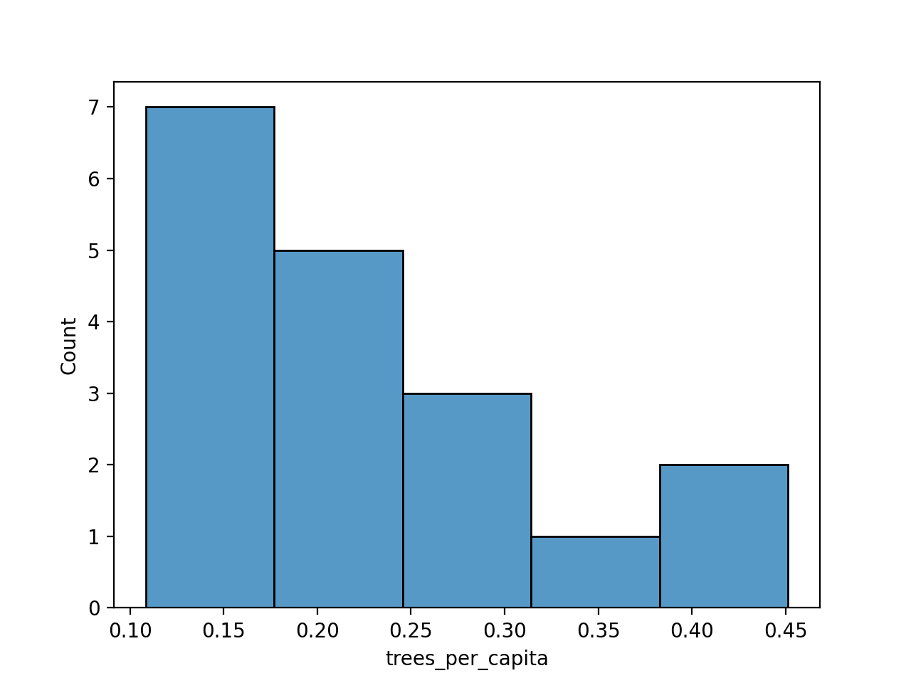

Program 3: Trees & Neighborhoods
CSci 39542: Introduction to Data Science
Department of Computer Science
Hunter College, City University of New York
Spring 2022
Classwork Quizzes Homework Project
Program Description
Program 3: Trees & Neighborhoods. Due 10am, Wednesday, 15 February.
Is there a neighborhood in New York City with more trees than people? In Program 2 we looked at the number of trees that The New York City Street TreesCount Project counted by areas of differing levels of granuality: from boroughs to zipcodes to council districts to neighborhood tabulation areas. New York City Neighborhood Tabulation Areas (NTAs) are areas in the city that roughly corresponding to neighborhoods. Each has an assigned code and name with non-residential areas such as large parks or airports having the borough code followed by '99'. For example, the neighborhood for Hunter College 69th Street Campus has the code 'MN40' and the name 'Upper East Side-Carnegie Hill'. Adjacent, Central Park is assigned the non-residential code for Manhattan: 'MN99' and name 'park-cemetery-etc-Manhattan'. This programming assignment focuses on the number of trees per capita in each neighborhood. Following Chapter 4, we will also compute summary statistics by neighborhood (e.g. the mean and median) and evaluate how well they model the tree population using two common loss functions. The assignment is broken into the following functions to allow for unit testing:
For example, let's set up a DataFrame using the Tree Census restricted to Staten Island:
Next, we'll make a DataFrame with the demographic information organized by neighborhood:
Using the Combining the two DataFrames:
Plotting the results:

We can summary statistics for trees per capita on Staten Island:
When using Mean Squared Loss:
When using Mean Absolute Loss:
What we've built are constant models, models that summarize all of the data by a single value. Based on our choice of loss function, we get a different minimizing value. By choosing to minimize MSE (mean squared error), calculating a model using the mean will minimize the error. Likewise, if we choose to minimize the MAE (averabe absolute error), then a constant model using the median will perform better. What we have built here is a tester function, not unlike the ones used to grade assignments in Gradescope Autograder. To test if our test function is working as expected, try the following:
Hints:
Learning Objective: to successfully filter formatted data using standard Pandas operations for selecting and joining data and evaluate simple (constant) models using loss functions.
Available Libraries: Pandas and core Python 3.6+.
Data Sources: The New York City Street TreesCount Project,
Neigborhood Tabulation Areas.
Sample Datasets:
clean_df(df, year = 2015):
This function takes two inputs:
df: the name of a DataFrame containing TreesCount Data from OpenData NYC.
year: the year of the data set. There are three possible years 1995, 2005, or 2015. The default value is 2015.
The function does the following:
2015, the function should take df and drop all columns except:
['tree_dbh', 'health', 'spc_latin', 'spc_common', 'nta', 'latitude', 'longitude']2005, the function should take df and drop all columns except:
and rename the corresponding columns that differ from 2015 to the 2015 names. For example, ['tree_dbh', 'status', 'spc_latin', 'spc_common', 'nta', 'latitude', 'longitude']status is renamed to health.
1995, the function should take df and drop all columns except:
and rename the corresponding columns that differ from 2015 to the 2015 names. For example, ['diameter', 'condition', 'spc_latin', 'spc_common', 'nta_2010', 'latitude', 'longitude']diameter is renamed to tree_dbh.
Hint: This is slightly different than the function from Program 2 in that different columns are dropped.
make_nta_df(file_name):
This function takes one input:
The function should open the file file_name: the name of a CSV file containing population and names for neighborhood tabulation areas (NYC OpenData NTA Demographics).
file_name as DataFrame, returns a DataFrame
containing only the columns containing the NTA code
(labeled as nta_code), the neigborhood name (labeled as nta_name), and the 2010 population (labeled as population).
count_by_area(df):
This function takes one inputs:
The function should return a DataFrame that has two columns, df: a DataFrame that includes the nta column.
[nta, num_trees] where nta is the code of the Neighborhood Tabulation Area and num_trees is the sum of the number of trees, grouped by nta.
Hint: count_by_area is similar to the one written in Program 2, but a DataFrame (not a groupby object) is expected. See Chapter 6.2 on aggregating, resetting indices, and converting groupby objects into DataFrames.
neighborhood_trees(tree_df, nta_df):
This function takes two inputs:
This function returns a DataFrame as a result of joining the two input dataframes, with tree_df: a DataFrame containing the column nta
nta_df: a DataFrame with two columns, 'NTACode' and 'NTAName'.
tree_df as the left table. The join should be on NTA code.
The resulting dataframe should contain the following columns, in the following order:
nta
num_trees
nta_name
population
trees_per_capita: this is a newly calculated column, calculated by dividing the number of trees by the population in each neighborhood.
compute_summary_stats(df, col):
This function takes two inputs:
This function returns the mean and median of the Series df: a DataFrame containing a column col.
col: the name of a numeric-valued col in the DataFrame.
df[col].
Note that since numpy is not one of the libraries for this assignment, your function should compute these statistics without using numpy.
mse_loss(theta,y_vals)::
This function takes two inputs:
Computes the Mean Squared Error of the parameter theta: a numeric value.
y_vals: a Series containing numeric values.
theta and a Series, y_vals. See Section 4.2: Modeling Loss Functions where this function is implemented using numpy. Note that numpy is not one of the libraries for this assignment and your function should compute MSE without using numpy.
mae_loss(theta,y_vals)::
This function takes two inputs:
Computes the Mean Absolute Error of the parameter theta: a numeric value.
y_vals: a Series containing numeric values.
theta and a Series, y_vals. See Section 4.2: Modeling Loss Functions where this function is implemented using numpy. Note that numpy is not one of the libraries for this assignment and your function should compute MAE without using numpy.
test_mse(loss_fnc=mse_loss):
This test function takes one input:
This is a test function, used to test whether the loss_fnc: a function that takes in two input parameters (a numeric value and a Series of numeric values) and returns a numeric value. It has a default value of mse_loss.
loss_fnc returning True if the loss_fnc performs correctly (e.g. computes Mean Squared Error) and False otherwise.
Let's run through some testing code to check if your program is written correctly.
will print:
df_si = pd.read_csv('trees_si_2015.csv')
df_si = clean_df(df_si)
print(df_si)
There are 105,318 trees recorded on Staten Island, and we have kept their diameter, health, species, NTA, and latitude and longitude.
tree_dbh health spc_latin spc_common nta latitude longitude
0 6 Good Gleditsia triacanthos var. inermis honeylocust SI14 40.596579 -74.076255
1 13 Fair Platanus x acerifolia London planetree SI54 40.557103 -74.162670
2 9 Good Acer pseudoplatanus sycamore maple SI25 40.568821 -74.138563
3 4 Good Gleditsia triacanthos var. inermis honeylocust SI36 40.588107 -74.086678
4 12 Fair Platanus x acerifolia London planetree SI25 40.568825 -74.139062
... ... ... ... ... ... ... ...
105313 8 Fair Pyrus calleryana Callery pear SI01 40.526324 -74.165559
105314 9 Good Prunus cherry SI01 40.555569 -74.170760
105315 7 Fair Prunus cherry SI36 40.583082 -74.085256
105316 1 Good Malus crab apple SI05 40.595459 -74.184460
105317 12 Good Acer rubrum red maple SI07 40.620762 -74.136517
[105318 rows x 7 columns]
will print:
nta_df = make_nta_df('Census_Demographics_NTA.csv')
print(nta_df) nta_code nta_name population
0 BX01 Claremont-Bathgate 31078.0
1 BX03 Eastchester-Edenwald-Baychester 34517.0
2 BX05 Bedford Park-Fordham North 54415.0
3 BX06 Belmont 27378.0
4 BX07 Bronxdale 35538.0
.. ... ... ...
192 SI48 Arden Heights 25238.0
193 SI54 Great Kills 40720.0
194 SI99 park-cemetery-etc-Staten Island 0.0
[195 rows x 3 columns]
counts_by_area function:
will print a row for each neighborhood in Staten Island:
df_si_counts = count_by_area(df_si)
print(df_si_counts) nta num_trees
0 SI01 12969
1 SI05 8446
2 SI07 4954
3 SI08 2505
4 SI11 8216
5 SI12 3776
6 SI14 2133
7 SI22 3970
8 SI24 4823
9 SI25 5675
10 SI28 3084
11 SI32 9251
12 SI35 3539
13 SI36 4952
14 SI37 3840
15 SI45 5452
16 SI48 6999
17 SI54 10734
will print:
df = neighborhood_trees(df_si_counts, nta_df)
print(df)
Note that there are only entries for neighborhoods in the DataFrames of trees and that neighborhoods for which there is no tree count information are dropped from the table. Also, a new column with the per capita tree count is part of the resulting DataFrame.
nta num_trees nta_name population trees_per_capita
0 SI01 12969 Annadale-Huguenot-Prince's Bay-Eltingville 27770 0.467015
1 SI05 8446 New Springville-Bloomfield-Travis 39597 0.213299
2 SI07 4954 Westerleigh 24102 0.205543
3 SI08 2505 Grymes Hill-Clifton-Fox Hills 22460 0.111532
4 SI11 8216 Charleston-Richmond Valley-Tottenville 23313 0.352421
5 SI12 3776 Mariner's Harbor-Arlington-Port Ivory-Granitev... 31474 0.119972
6 SI14 2133 Grasmere-Arrochar-Ft. Wadsworth 16079 0.132658
7 SI22 3970 West New Brighton-New Brighton-St. George 33551 0.118327
8 SI24 4823 Todt Hill-Emersn Hill-Heartland Villg-Lighthse... 30714 0.157029
9 SI25 5675 Oakwood-Oakwood Beach 22049 0.257381
10 SI28 3084 Port Richmond 20191 0.152741
11 SI32 9251 Rossville-Woodrow 20763 0.445552
12 SI35 3539 New Brighton-Silver Lake 17525 0.201940
13 SI36 4952 Old Town-Dongan Hills-South Beach 24835 0.199396
14 SI37 3840 Stapleton-Rosebank 26453 0.145163
15 SI45 5452 New Dorp-Midland Beach 21896 0.248995
16 SI48 6999 Arden Heights 25238 0.277320
17 SI54 10734 Great Kills 40720 0.263605
would give the plot:
import matplotlib.pyplot as plt
import seaborn as sns
sns.histplot(df['trees_per_capita'], bins=5)
plt.show()
The first couple of rows are:
si_mu, si_med = compute_summary_stats(df, 'trees_per_capita')
print(f'For the Staten Island tree counts, mean = {si_mu}, median = {si_med}.')For the Staten Island tree counts, mean = 0.22610502138533586, median = 0.20374159702387062.
we have:
print(f'For MSE, mean has loss of {mse_loss(si_mu,df["trees_per_capita"])} and median has loss of {mse_loss(si_med,df["trees_per_capita"])}.')For MSE, mean has loss of 0.01061171643360503 and median has loss of 0.011111839182776008.
we have:
print(f'For MAE, mean has loss of {mae_loss(si_mu,df["trees_per_capita"])} and median has loss of {mae_loss(si_med,df["trees_per_capita"])}.')For MAE, mean has loss of 0.08106163936390469 and median has loss of 0.07735408969524642.
will print:
print(f'Testing mse_loss: {test_mse(mse_loss)}')
print(f'Testing mae_loss: {test_mse(mae_loss)}')Testing mse_loss: True
Testing mae_loss: False
pandas. If you include others (such as the ones for plotting), comment those out before submitting to the autograder. Similar to trying to use libraries that are not loaded on HackerRank or codio, the autograder will crash since those are not available.